Sales Orders
Verify and/or change location prior to starting a new order. To change location, select location with one click and choose desired location for list.
Home Screen: Select then select from start a task
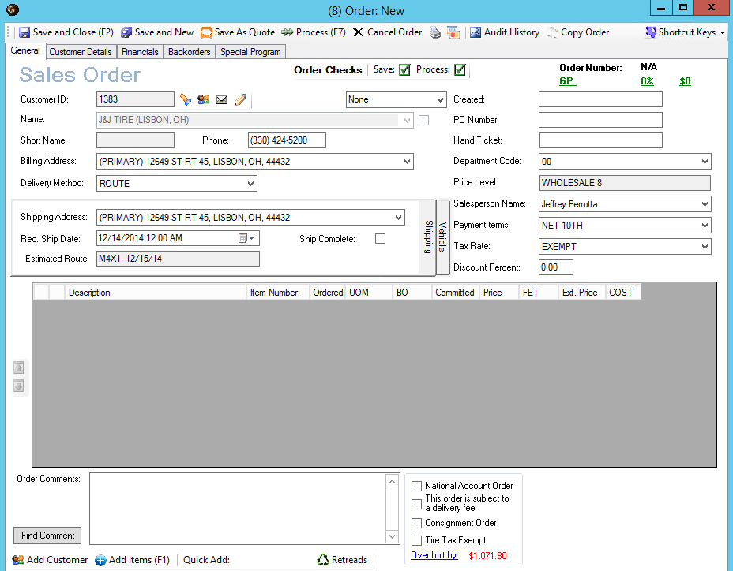
Toolbar
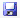
Save and Close – Saves order and closes order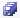
Save and New – Saves order and takes you directly to new order screen- Save as Quote – Saves order as quote
- Process – Processes order depending on delivery method selected in order
- Cancel Order – Cancels an order in the open status
- Prints Orders
- Allows direct credit card payment
- Audit History – Displays all editing done to order (including price changes, deleted items, added items, etc.)
- Copy Order – Allows order to be copied to new order
- Shortcut keys – Allows configuration and save of shortcut keys
Creating Order
- Enter customer name or customer ID
- Displays only customer related to that home location
- If customer has existing orders, will prompt to select an existing order or cancel to start new order. An order in processing status should not be selected and added to. Processing status means that order has been sent to shipment manager.
- SUGGEST: adding to open sales orders to minimize number of invoices customer receives.
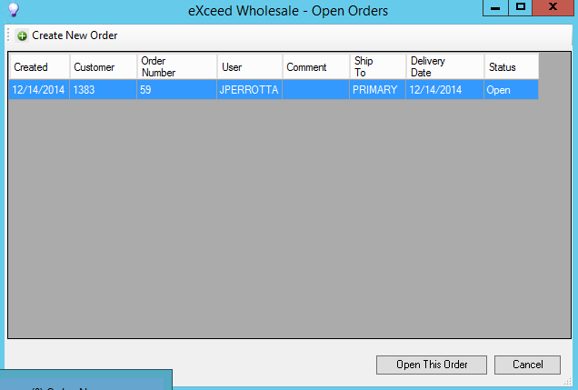
-
- Allows emailing directly from sales order
- Allows viewing of customer record from sales order (including customer pricing)
- Allows customer to be changed. Will update customer pricing when changed.
- Verify header information (Populates from customer record data)
- Billing Address: Will generally be the same as shipping information
- Delivery Method: Route, Will-Call, UPS, FedEx, LTL and Direct Ship
- Change if needed based on customer preference for order
- Shipping Address: Defaults based on customer record setup
- May be multiple ship to locations – will notify in yellow
- Requested Ship Date: Date will default to today’s date unless changed
- Change this if customer wants to order but not take delivery until a date in the future
- If date change required, MUST use date product will be loaded NOT day tires need to be delivered
- Estimated Route: Will display the next available route customer will be delivered
- Can be on multiple routes
- Ship Complete: Check only if you want to ship order after all backordered items have been filled
- PO Number: May be set as a required field based on customer record setup
- If required, flashing red exclamation point will appear until field has been populated
- Price Level: Default price level based on shipping address in customer record setup
- This field cannot be changed
- Salesperson Name: Defaults to ASR assigned to customer in customer record setup
- Payment Terms: Defaults to terms set in customer record setup
- Tax Rate: Defaults to tax rate set in customer record setup
- Discount Percent: Used to take a discount on the entire order
- Special Programs: Select special program (see Goodyear processing procedures)
- Select Add Items
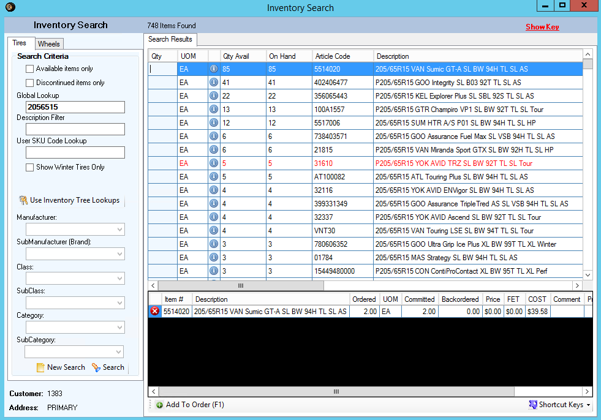
-
- Optional checkbox for Available items only
- Optional Checkbox for Discontinued items only
- Discontinued items are set in item master record and display in red
- Global Lookup: Enter search criteria
- Universal Sku: simple tire size, three-digit mfg. abbreviation, and mfg. item number (i.e. 2056515GOO402406477)
- Searchable by all or any combination of universal Sku
- Description Filter: Used to narrow search results based on description
- i.e. line of tire, speed rating, etc.)
- When description filter is removed goes back to original search results
- User Sku Code Lookup: Another lookup based on what is populated in User SKU field in item record
- Optional checkbox to display winter tires only
- Use Inventory Tree Lookups: Can be used to search by inventory tree nodes
- Select items to add to order
- Search results display by largest quantity available
- Search results display the customer’s price based on default price level set in customer record and any additional customer pricing rules added for them specifically
- Enter quantity of desired item and enter. Will move selected item to cart below search screen and return to Global Lookup for next item search
 Note: ALL search columns are sortable by clicking column header to sort in ascending order. Click again will go back to descending order.
Note: ALL search columns are sortable by clicking column header to sort in ascending order. Click again will go back to descending order.
- Select
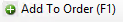
when all items have been added - Items will be populated in sales order
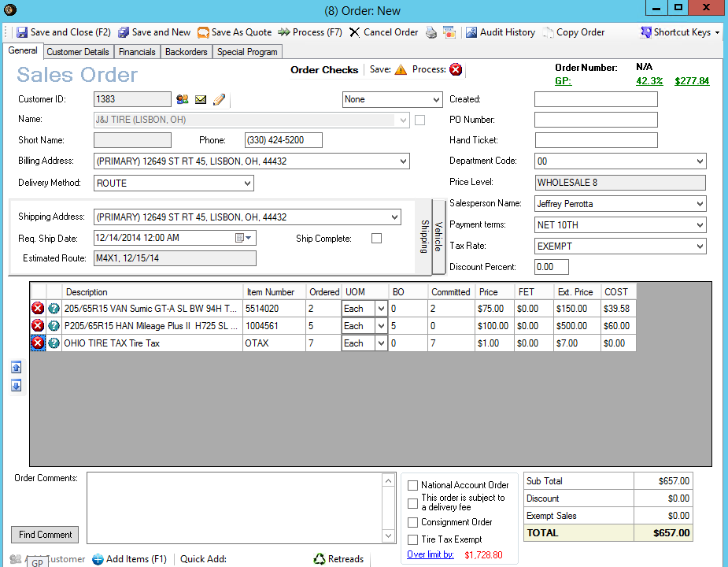
-
- Tire tax will automatically be added based on type of tire and Tire Tax designation in customer record
- Items will display with backordered quantities if none available
- Backorders are filled based on ordered date
- Enter additional line items if necessary
- Add comments if desired
- Select
- Select desired comment
- Select Done
- GP Display: Displays gross profit percent and dollars
- If customer is over credit limit this will display amount over credit limit
- Depending on company setup this order may not be delivered until resolved
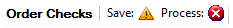
Verify order has green check mark in Process- Based on delivery method follow below process
- ROUTE: Save and Close order. Order processing will be handled by warehouse personnel
- WILL-CALL: Process and print invoice to picking warehouse printer
- FED-EX: Process and print invoice to picking warehouse printer
- UPS: Process and print invoice to picking warehouse printer
- LTL: Print work order to warehouse for manual picking
- DIRECT SHIP: Process and print/email to custom
Customer Details Tab
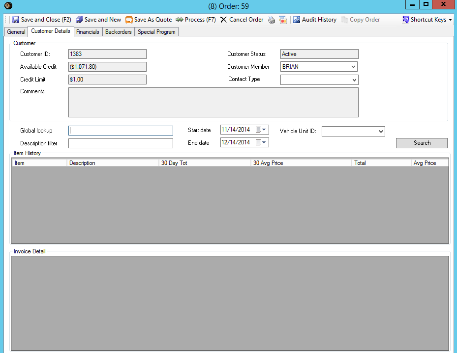
- Displays available credit, credit limit and customer comments
- Provides ability to lookup item history
- Global Lookup: Enter ALL or a combination of Universal Sku
- Description Filter: Enter additional filter information (from item description)
- Select start and end date from calendar dropdown
- Enter Vehicle unit ID in desired
- Select
- Return to General Tab when complete
Financials Tab
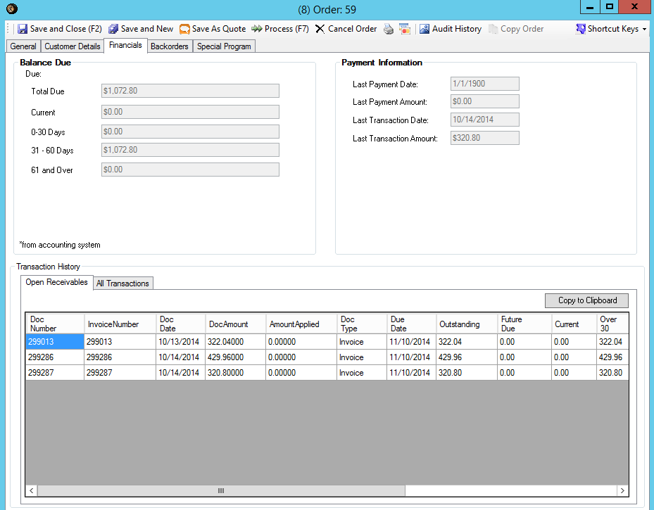
- Displays Balance Due and Payment information
- Displays Open Receivables
- Displays All Transactions
Note:
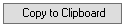
Can be used to copy into Excel to provide to customer based on access rights.Backorders
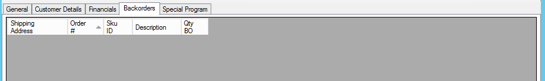
- Displays all backorders for customer
Special Programs
Used for validating National Account, P&R, Secondary Supply and Government submission (See individual procedures)
Default Cash Customer – Displays ONLY when default cash customer has been selected on sales order. Provides fields to enter ship-to information. Printable on invoices and reportable.
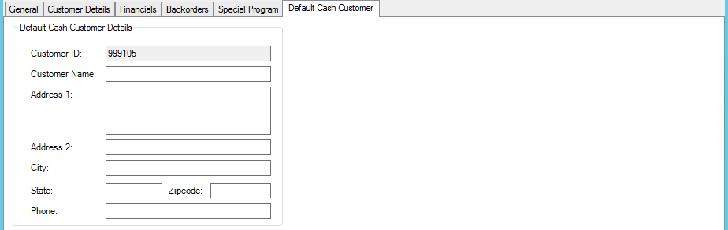
Note: Quotes will be done through new Order. When order generation is complete choose SAVE AS QUOTE. By using this function, inventory will not be allocated, and sales orders will display in the (Quote) status. Quotes can be retrieved by selecting Quotes from Find window on home screen.